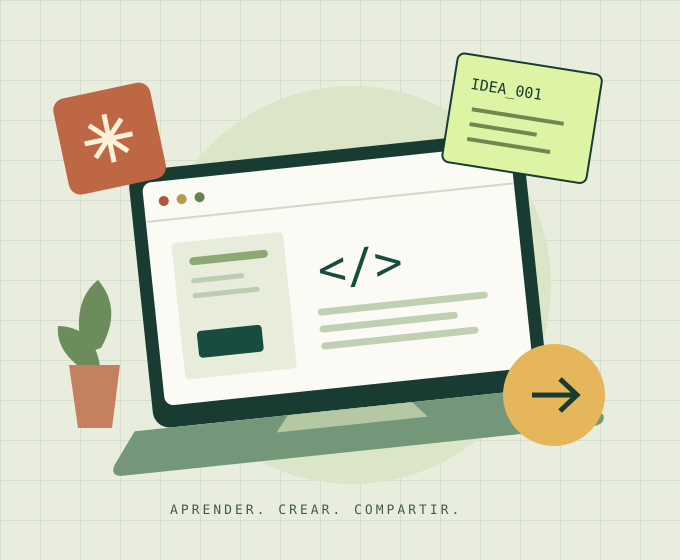

Tu primera página web
Da estructura a una idea con HTML y dale personalidad con CSS. Crea una web que funcione en cualquier pantalla.
3 sesiones · 6 horasMe interesa : Tu primera página web
UNA INICIATIVA PARA MENTES CURIOSAS
Aprende tecnología, comparte lo que sabes y convierte la curiosidad en un proyecto que puedas mostrar.
Sin experiencia previa · A tu ritmo · En comunidad

01 / LA INICIATIVA
Aula Abierta es una propuesta académica para acercar las herramientas digitales a estudiantes de distintas carreras. El punto de partida es sencillo: aprender haciendo, con retos pequeños y objetivos claros.
Cada taller propone un resultado concreto: una página web, un prototipo o un proyecto organizado en equipo. Puedes empezar desde cero y construir sobre lo aprendido.
Proyecto demostrativo de Aplicaciones Web. La oferta de talleres es ilustrativa; no representa una convocatoria oficial de la universidad.
02 / ENCUENTRA TU PUNTO DE PARTIDA
Elige el área que te interesa.
Todos los caminos empiezan con curiosidad.
3 talleres disponibles
Da estructura a una idea con HTML y dale personalidad con CSS. Crea una web que funcione en cualquier pantalla.
Transforma una necesidad en un prototipo. Explora jerarquía visual, contraste y experiencias fáciles de usar.
Organiza tareas, documenta decisiones y descubre cómo Git ayuda a construir proyectos entre varias personas.
03 / DE LA CURIOSIDAD A LA PRÁCTICA
Explora las áreas y elige una habilidad que quieras empezar a desarrollar.
Resuelve ejercicios, prueba alternativas y aprende también de tus errores.
Documenta lo que construiste y cuenta qué mejorarías en una siguiente versión.
04 / DA EL SIGUIENTE PASO
Prueba el formulario y elige el taller que te interesa.
Demostración académica: los datos se validan únicamente en tu navegador. No se envían ni se guardan. No es una inscripción real.
05 / ANTES DE EMPEZAR
No. Los talleres están planteados como una introducción. Basta con saber usar un navegador y tener ganas de experimentar.
Una computadora con navegador actualizado y un editor de texto. Para el taller de colaboración también se propone instalar Git.
No. Este sitio es una demostración académica y el formulario solo ejemplifica una validación accesible en el navegador.